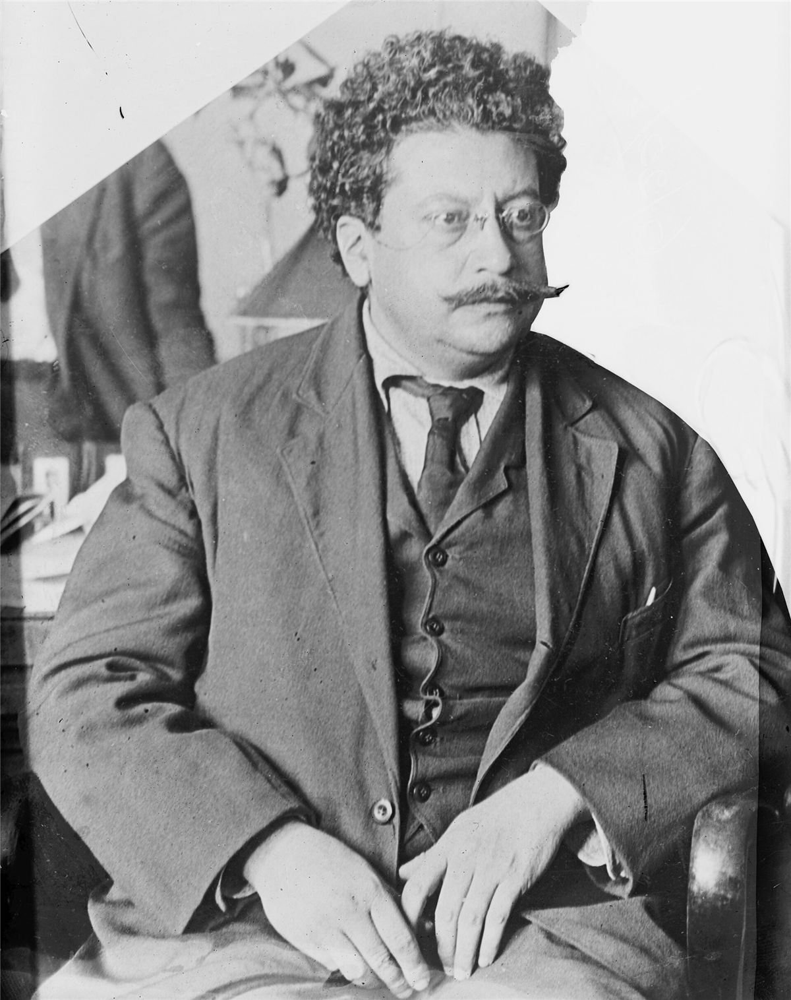

« Terre et liberté » : ce cri de la révolution mexicaine, on l'attribue souvent à Zapata. C'est Ricardo Flores Magón qui l'a popularisé, avec son journal Regeneración. Il a passé la moitié de sa vie adulte en prison, des deux côtés de la frontière, et il est mort dans une cellule américaine.

Sa vie
- Il naît en 1873 dans l'État d'Oaxaca, au Mexique. Son père, d'origine indigène, lui raconte la vie communautaire des villages, où la terre appartient à toutes et tous.
- 1900 : avec ses frères, il fonde le journal Regeneración, qui attaque la dictature de Porfirio Díaz. Prisons, journal interdit : il s'exile aux États-Unis en 1904.
- 1906 : depuis l'exil, il anime le Parti libéral mexicain, qui organise des grèves et des soulèvements. Il devient de plus en plus clairement anarchiste.
- 1911 : pendant la révolution, des troupes du Parti libéral prennent des villes de Basse-Californie sous le drapeau rouge de « Tierra y Libertad ». L'expérience tourne court.
- 1918 : aux États-Unis, il signe un manifeste anarchiste contre la guerre. Il est condamné à vingt ans de prison. Il meurt au pénitencier de Leavenworth, au Kansas, en 1922, dans des circonstances jamais éclaircies.
Ce qu'il défend
- Terre et liberté : rendre la terre aux communautés paysannes et indigènes, sans propriétaires ni gouvernement.
- Les communautés indigènes comme exemple vivant d'une société sans État.
- Une révolution sociale, pas un simple changement de président.
Ce qu'on en discute
L'épisode de Basse-Californie a été utilisé contre lui : des aventuriers américains s'étaient mêlés aux troupes, et ses adversaires l'ont accusé de vouloir livrer la région aux États-Unis. Cette accusation a pesé longtemps sur sa mémoire. Aujourd'hui, les zapatistes du Chiapas se réclament de lui comme de Zapata.
Sources et pour aller plus loin
Lire
- La Révolution mexicaine, Ricardo Flores Magón, textes réunis et traduits en français.Ses textes de 1910-1918.
Sur le web
- Ricardo Flores Magón sur WikipédiaRepères biographiques.
Portrait écrit par la bande à Mamie. Photo d'époque issue de Wikimedia Commons. Libre de reproduction.